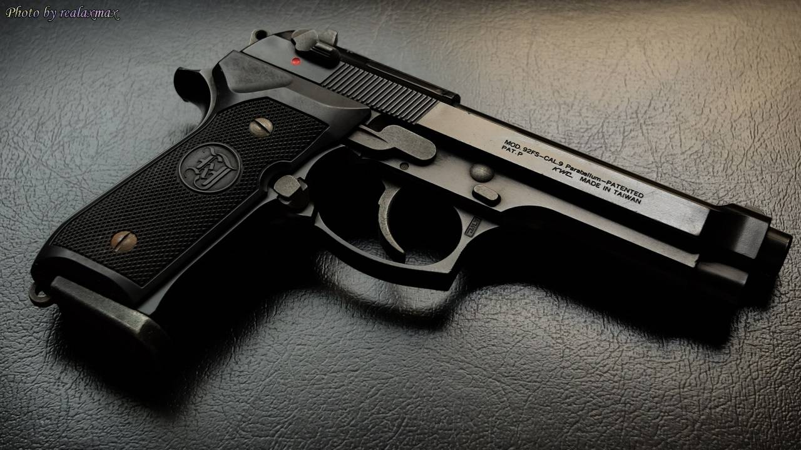

貝瑞塔92手槍

貝瑞塔92屬於一種半自動手槍（亦可改造成全自動），使用閉鎖式槍機與槍管短行程後座機構、扳機為單／雙動模式，發射9×19公釐帕拉貝倫手槍彈。
- 96型則發射威力稍大的.40 S&W彈藥，即是將滑套、槍管和彈匣改裝成該口徑專用。
貝瑞塔公司將92SB型作升級而成為產生92F型和92G型。幾乎是將所有的零件重新設計過，使其擁有可和多數手槍零件通用的特性，因此更便利於供給政府或是軍隊等大規模使用的組織，可以更輕鬆的保養和維修。
貝瑞塔公司同時調整了扳機護弓，其人體工學設計使得扣動扳機時更為省力；握把的角度也經過特殊設計，使得熟練的射擊者不需要過長的時間便能迅速且準確的瞄準；槍管外層鍍鉻以增強其抗腐蝕力及延長整體使用壽命。槍身上使用了專利的鍍膜技術（Bruniton），讓新型92F／G比以前的烤藍92SB型擁有更佳的抗腐蝕性。
另外，法國軍隊要求將92G的保險裝置移除，以一個擊錘代替，其改型為PAMAS-G1手槍。貝瑞塔公司雖授權給GIAT（法國生產商）讓其生產改造貝瑞塔92F型，但前期法國軍隊所使用的PAMAS-G1型手槍仍是在義大利生產，直至法國的製造廠預備好生產貝瑞塔手槍，因此仍有部份PAMAS-G1型的手槍是由法國提供鋼材，卻是由義大利貝瑞塔公司製造。
早期的GIAT公司為了節省開支，在用於製造PAMAS-G1的鋼材中加入了令硬度增加的碲，導致滑套部份相對脆弱。這使得早期法製PAMAS-G1有著滑套容易斷裂的問題，這可能會造成其飛散的碎片飛散至射手臉上。雖然上述的情況非常罕見，但是法國陸軍仍全面收回PAMAS-G1型手槍，並且向GIAT公司提出PAMAS-G1型在壽命期內的問題報告，之後GIAT公司則以全鋼滑套更換含碲鋼滑套，並於2002年時更恢復原先貝瑞塔公司設計的保險柄以加強其操作上的安全性。
特點：1.射擊精度高 2.維修性好，故障率低。槍在惡劣戰鬥條件下適應性強，槍管壽命高達10000發。